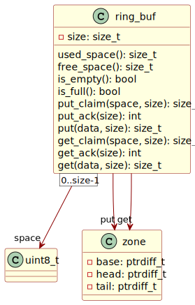

|
ring_buf
|
What are ring buffers[^1] and why are they useful? The “ring” in “ring buffer” refers to fixed-size memory space under continuous cyclic reuse. The structure is a FIFO[^2] container, ideal for stream buffering where produced events are processed in the order received by a consumer. Exemplar applications include asynchronous communication scenarios, e.g. interrupt service routines in embedded systems.
Zephyr includes a promising component by Intel. Zephyr is an excellent real-time operating system for resource-constrained embedded devices. Nordic Semiconductor’s nRF Connect development kit runs on Zephyr. This article describes a refactored version of the Zephyr ring buffer implementation.
The goal here is to provide:
The implementation language is C99 since the target platform for this kind of collection structure is a memory-limited embedded device of some sort. The C99 code needs access to basic types: fast unsigned and signed integers.

Find the complete implementation on GitHub.
This is the three-phase basic ring buffer access pattern. Space claims work on spans of contiguous space. Take special note of the important italics. Buffer claims access only contiguous buffer space, never to discontiguous space.
Putting writes to a ring buffer. Get operations read from a ring buffer. One put operation starts with a claim. A successful claim expands the “put zone” by the requested number of bytes. Acknowledging the same number of bytes advances the put zone. Notice that the claim cannot span across the end of the buffer space. Buffer size less the put zone’s head clamps the claim size. It cannot exceed the remaining contiguous space.
Acknowledgement works thus:
Get operations do their work analogously. Getting spans the get zone, the used buffer space rather than the free buffer space.
The put operation puts as much data in the ring buffer as possible. Its answer is the number of bytes successfully buffered. The result may be zero bytes or less than the number requested. Implementation below.
What does this mean in practice? You can put partials. This behaviour exists by design. It is not a mistake. Use a guarded claim to ensure full item buffering. Claim first and then only acknowledge the put size if the buffer can successfully claim sufficient space.
Putting part of something may not always be required. The buffer may contain discrete chunks of fixed-size data: integers or floats, for instance. In such cases, the ring buffer must claim and acknowledge all or none and never less than all.
Two alternative solutions exist: (i) check the free space first; or (ii) attempt to put and only acknowledge a complete copy. The first solution runs faster at first blush. The second solution requires a little more work but fails quickly assuming the buffer holds only chunks of data of equal size and the capacity of the buffer corresponds to a multiple of that size.
Acknowledgement only fails if the size of the acknowledgement exceeds the size of the previous claim. The “putter” can safely ignore the possible erroneous result if the acknowledgement matches the previous claim, or when acknowledging zero since zero is always less than or equal to any previous claim.
This approach comes with a disadvantage whenever the claim fails to meet the requested item size. A partial buffer copy could arise. The partial put or get operation would correctly disclaim the copied data. A performance hit occurs nevertheless: copying unnecessarily when the buffer cannot hold the data when putting the incoming bytes, or has insufficient data if outgoing. This only assumes that the buffer items have variable lengths or that the buffer space is not a multiple of the item size. Partial copies can never occur for fixed-size items in a harmonically-sized[^3] buffer space.
How does passive iteration work? Take an example. Assume that a ring buffer contains only floating-point numbers. Repeated claims will iterate through the get zone; a final $0$-acknowledgement will restore the zone, amounting to a sneaky peek at the buffer’s entire contents. See the excerpt below; it sums up the floats.
This makes some assumptions:
while condition uses double brackets to highlight the implied != 0 test.Also, note that the iteration does not copy the floats. It accesses the contents without copying them. Zero-copy translates to greater efficiency for embedded devices, especially useful during interrupt service handlers and similar time-constrained contexts.
The implementation makes use of signed integer magic. It aims to minimise pointer arithmetic. Head and tail indices apply base-relative addressing. A buffer space’s actual head index $h'=h-b$ where $h$ is the head of a zone and $b$ is its base. The same goes for a zone’s tail.
Some surprises arise. Partial putting seems wrong at first. Some scenarios exist where this feature presents a desirable asset. Draining UART or other peripheral buffers come to mind. The UART service handlers want to put as much data in the ring buffer as possible and acknowledge the partial transfer so that their downstream handlers can pick up the contents as quickly as possible while unloading the peripheral registers as much as possible for the upstream incoming hardware to remain as ready as possible for the next cycle and its tranche of data.
The implementation differs from Zephyr, albeit inspired by Intel’s contribution. The simple putter or getter must always acknowledge the claimed space. Put and get operations follow the claim-acknowledge protocol whether non-contiguous or contiguous. The same protocol applies to both.
Item-based putting and getting lives in its own separate module—another difference. The included item access interface stores only the size. It does not include other information such as type.
[^1]: also known as circular buffers
[^2]: first in, first out
[^3]: meaning that the entire buffer space divides evenly by the item size without remainder